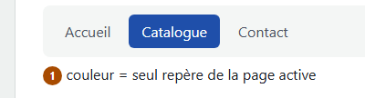
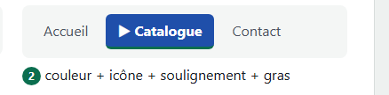
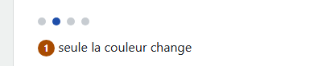
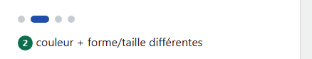
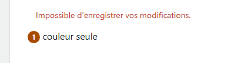
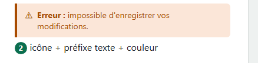

1.1. La couleur n'est jamais le seul vecteur d'une information ; si utilisée, une alternative visuelle (forme, icône, texte) est prévue et documentée dans les spécifications pour les développeurs.






Notice AcceDeWeb – Assurer la compréhension de l'information même en l'absence de couleurs